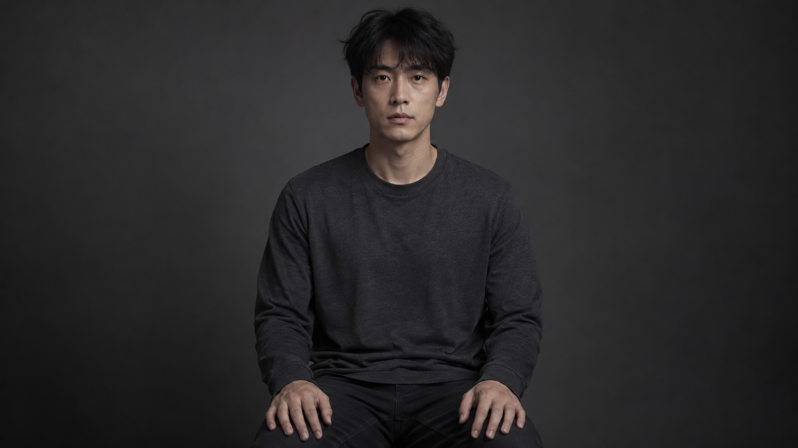
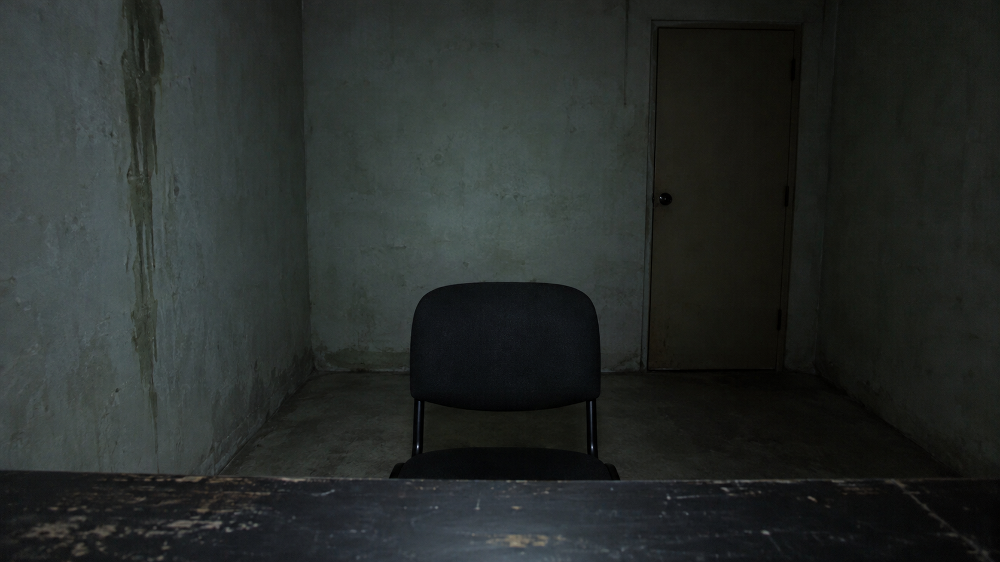
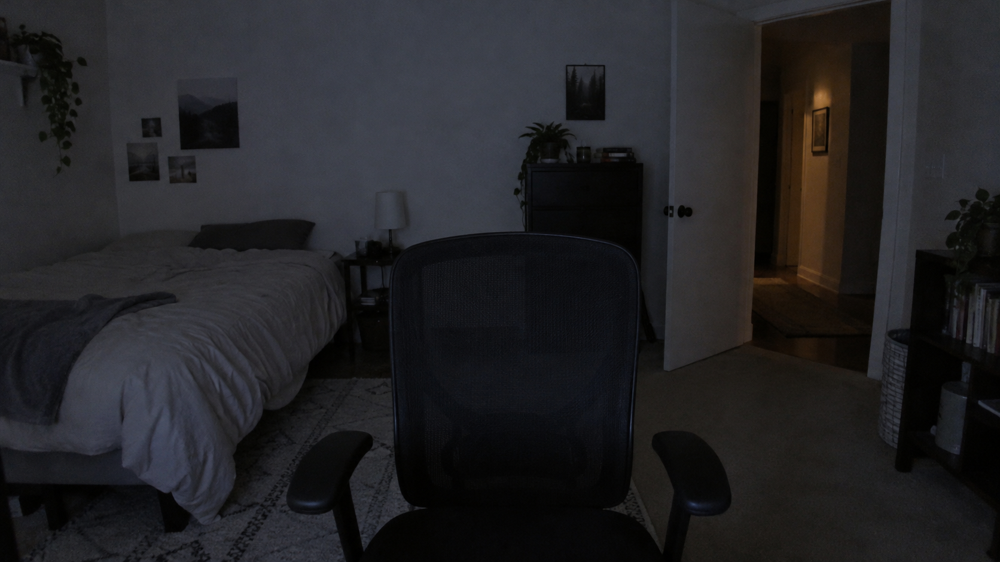
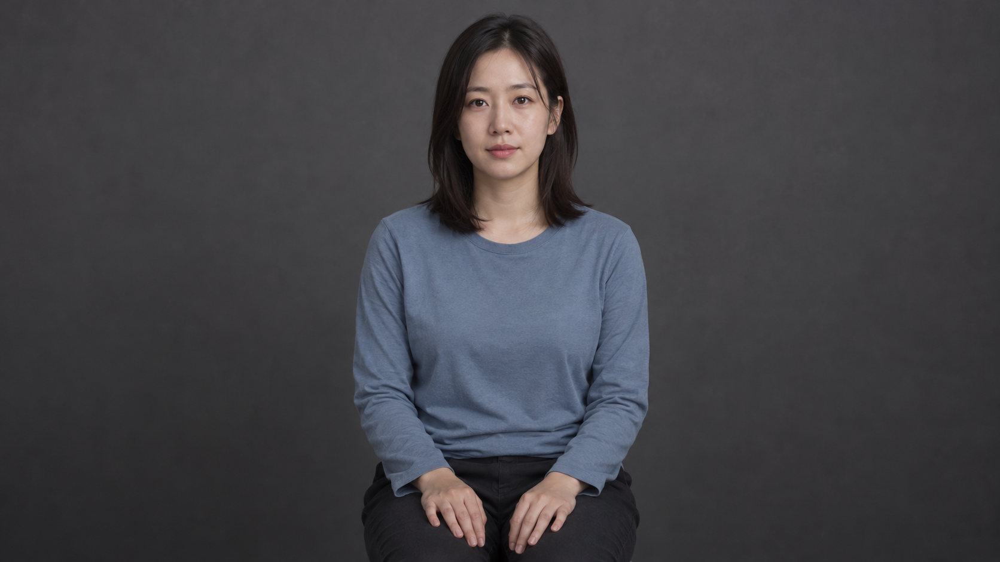

A01 / OMNI REFERENCE화면 속 인물 한 명의 얼굴·짧은 검은 머리·차콜 긴팔 상의·검은 바지. 스튜디오 배경과 중립 자세는 채택하지 않음.

B01 / OMNI REFERENCE갇힌 방의 회녹색 콘크리트 벽·화면 오른쪽 뒤의 닫힌 문·왼쪽 벽 얼룩·검은 팔걸이 없는 의자 한 개·책상·차가운 정면광.

B02 / OMNI REFERENCE가짜 시청자 웹캠 공간. 중앙의 검은 사무용 의자, 왼쪽 침대, 오른쪽 열린 흰 문과 따뜻한 복도 빛. 빈 의자는 공간 참조이며, 인물의 착석과 이동은 각 클립의 행동을 따른다.

A02 / OMNI REFERENCE성인 여성 시청자 한 명의 얼굴·어깨 길이 검은 머리·차분한 청회색 긴팔 상의·어두운 바지. 중립 스튜디오 배경과 자세는 채택하지 않음.
참조 이미지 4장은 외형과 공간에 사용합니다. 포토 보드 32장은 검토용이며 모두 업로드할 필요가 없습니다. 프롬프트의 시간 설정과 02:50 편집 배치는 별도 자료로 관리합니다. 이 페이지는 실제 웹캠에 접근하지 않습니다.